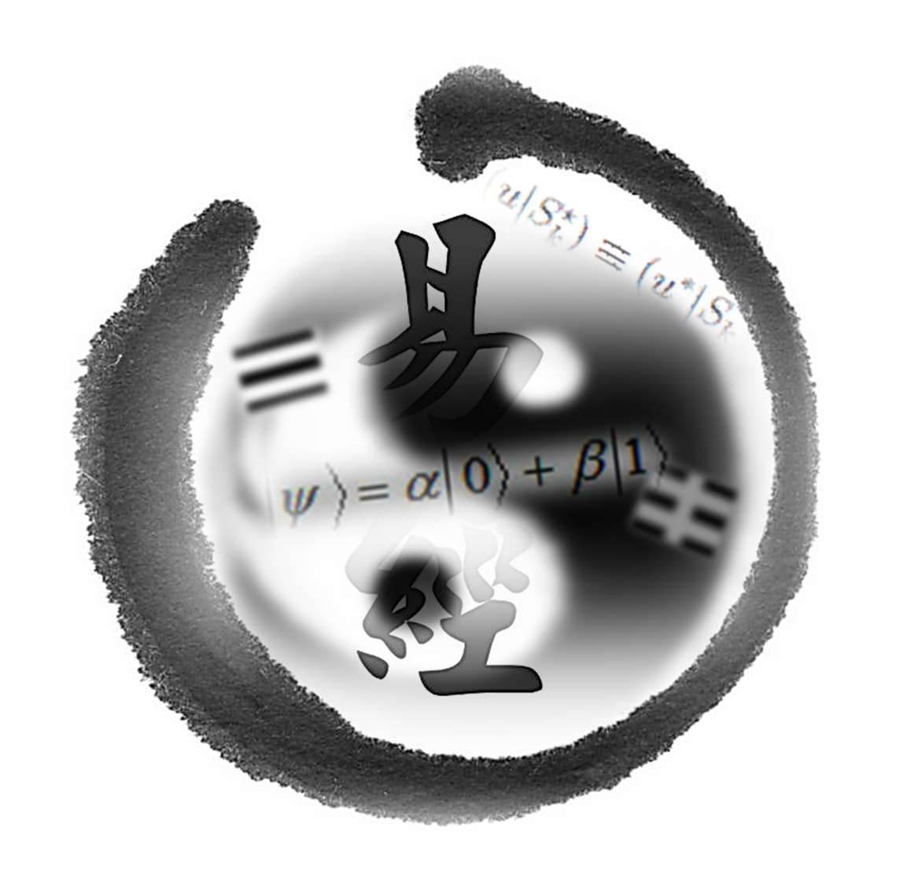

Yi Xue is the ancient chinese cosmology, which is based on the theory of duaity yin and yang that demonstrates the philosophical idea of opposition and complementation to explain the governing rules of the heaven, the earth and human. With deep wisdom and insight, the ancient chinese saint and philosophers realize that the universe is ruled by the periodic movement of yin and yang and the growing and inhibiting relationship the five elements. On the other contrary, modern cosmology is based on rigorous rigorous physics observation and theory, in which the contempary cosomological model in the marcoscopic view is constructed by Einstein's general relativity, while the microscopic world is governed by quantum mechanics, quantum field theory and particle physics. From the time being, the relationship between Yi Xue and science is limited to bare discussion, however there is not any person cabable to establish physics or mathematics formalism for Yi Xue. Therefore, our organization aims at carrying out in-depth scientic research on Yi Xue, with the goal of revolutionizing Yi Xue in a scientific way. Meanwhile, we discover that the duality principle in Yi Xue resembles the fundamental concepts in Buddhism. In Prajna reflection, the Buddha perceives that form is equivalent to emptiness. Form and emptiness are in opposition but equivalent. This principle is in line with Yi Xue. We establish mathematical formalism which can reconcile Yi Xue, Buddhism in a formal way, leading to a milestone on the unification of religion and science.
易學是中國古代的宇宙學，它是以二元陰陽的對立與統一去描述宇宙天、地、人三才的運行。 中國先哲聖賢以睿智洞察天地間的萬事萬物的法則不外乎陰陽二氣相推 循環流轉及五行之間的生剋制化而成。另一邊廂，當今的宇宙學是建基於嚴謹的物理學觀察及理論，宏觀世界是由愛因斯坦的廣羲相對論主宰，而微觀世界是建立於量子力學， 量子場論及粒子物理。 一直以來，易經與科學之間的關係都只過停留在討論階段，但從未有人以嚴正的物理或數學理論規範易學。有鑑如此，此組織的成立志於研究易學中物理及數學， 務求對易學進行深入的理學研究，為易學科學化展開新的里程埤。與此同時，我們發現易學中二元系統的對立及統一與佛學的根本概念有異曲同工之妙。佛學對宇宙人生的實相理解完滿透徹。 佛陀在甚深般若觀照中，證悟出色空不二。色與空對立又同等。這與易學相通。我們建立的數學系統，可以為易學、佛學作出嚴格規範，從而為宗教與科學的統一邁進一大步。 